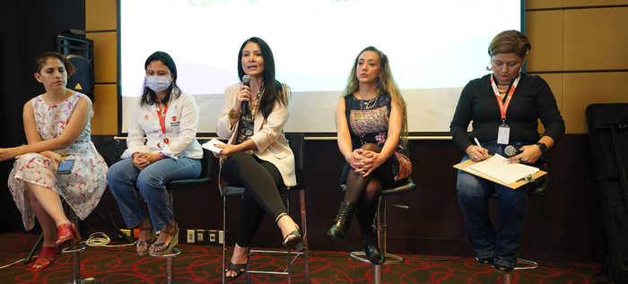
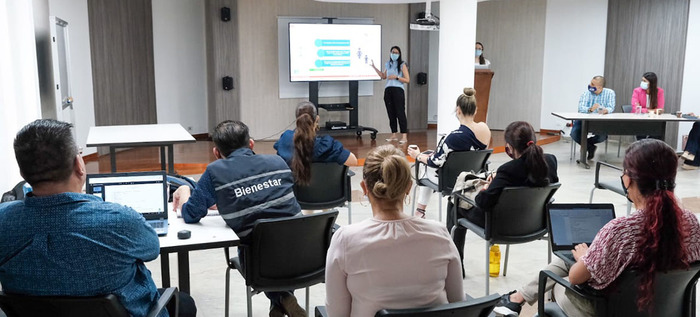

<!DOCTYPE html>
<html lang="es"></html>

<head>
    <link href="./css/estilos3.css" rel="stylesheet">
     <meta charset="utf-8">
     <meta name="viewport" content="width=device-width, initial-scale=1">
     <title>Bootstrap demo</title>
 
    <link href="https://cdn.jsdelivr.net/npm/bootstrap@5.3.0-alpha1/dist/css/bootstrap.min.css" rel="stylesheet" integrity="sha384-GLhlTQ8iRABdZLl6O3oVMWSktQOp6b7In1Zl3/Jr59b6EGGoI1aFkw7cmDA6j6gD" crossorigin="anonymous">
 <!--BARRA DE NAVEGACION-->
    <nav class="navbar navbar-expand-lg bg-body-tertiary">
  <div class="container-fluid">
    <a class="navbar-brand" href="./paginap.html">INICIO</a>
    <button class="navbar-toggler" type="button" data-bs-toggle="collapse" data-bs-target="#navbarNav" aria-controls="navbarNav" 
    aria-expanded="false" aria-label="Toggle navigation">
    <span class="navbar-toggler-icon"></span>
    </button>

    <div class="collapse navbar-collapse" id="navbarNav">
      <ul class="navbar-nav">
        <li class="nav-item">
          <a class="nav-link" href="./pagina3.html">¿Soluciones?</a>
        </li>
        <li class="nav-item">
          <a class="nav-link" href="https://www.gov.co/home">CALI.GOV.CO</a>
        </li>
        <li class="nav-item">
          <a class="nav-link" href="https://www.icbf.gov.co/lineamiento-violencia-sexual">Lineas de atencion</a>
        </li>
      </ul>
    </div>
  </div>
</nav>
 </head>
 
 <body>

   <script src="https://cdn.jsdelivr.net/npm/bootstrap@5.3.0-alpha1/dist/js/bootstrap.bundle.min.js" integrity="sha384-w76AqPfDkMBDXo30jS1Sgez6pr3x5MlQ1ZAGC+nuZB+EYdgRZgiwxhTBTkF7CXvN" crossorigin="anonymous"></script>
</div>
<br>
<!--COLUMNA TITULO-->
<div class="container text-center">
    <div class="row align-items-start">
      <div class="col">
        <h1> POSIBLES SOLUCIONES</h1>
      </div>
    </div>
  </div>
  <br>
  <!--COLUMNAS TEXTO-->
<div class="container px-4 text-center">
    <div class="row gx-5">
  
      <div class="col-6"><!--COLUMNA IMAGEN1-->
       
         
     </div>
  
        <div class="col-6"><!--COLUMNA 1-->
             <div class="p-3">La violencia sexual en menores es un problema complejo que requiere una respuesta multidisciplinaria y una cooperación estrecha entre diferentes partes interesadas, incluyendo autoridades gubernamentales, organizaciones no gubernamentales, profesionales de la salud y de la educación, familiares y la sociedad en general. A continuación, se presentan algunas posibles soluciones para abordar este problema:
             </div>       
        </div>
    </div>
</div>  
  <br> 
  <hr>
  <!--COLUMNA PARRAFO UNITARIO-->
<div class="container text-right">
    <div class="row align-items-start">
      <div class="col">
        <p> 1. Prevención: La educación y la prevención son fundamentales para prevenir la violencia sexual en menores. Se deben establecer programas educativos en las escuelas y en la comunidad para informar sobre los riesgos de la violencia sexual, cómo reconocer y reportar situaciones de abuso, y cómo establecer límites y mantenerse seguros.
            <br>
            <br>
         2. Fortalecimiento de la protección legal: Las leyes y los sistemas judiciales deben ser fortalecidos para proteger a los menores y garantizar que los perpetradores sean llevados ante la justicia. También es necesario proporcionar apoyo legal a las víctimas y sus familias.
         <br>
         <br>
         3. Acceso a servicios de salud: Los menores que han sido víctimas de violencia sexual necesitan servicios de salud integrales que incluyan atención médica, psicológica y de asesoramiento. Se deben establecer servicios especializados para proporcionar atención de calidad a las víctimas y sus familias.
         <br>
         <br>
         4. Intervención temprana: Los profesionales de la salud, los trabajadores sociales y los maestros deben ser capacitados para identificar los signos de la violencia sexual en menores y proporcionar intervenciones tempranas para prevenir daños a largo plazo.
         <br>
         <br>
         5. Sensibilización: La sociedad en general necesita ser más consciente de la violencia sexual en menores y la necesidad de prevenirla y abordarla. Se deben llevar a cabo campañas de concienciación y educación para cambiar las actitudes y comportamientos que contribuyen a la violencia sexual.
         <br>
         <br>
         6. Fortalecimiento de la familia: Las familias necesitan ser apoyadas para que puedan proporcionar un ambiente seguro y protector para sus hijos. Esto incluye proporcionar educación y capacitación a los padres y cuidadores sobre cómo prevenir la violencia sexual y cómo apoyar a los niños que han sido víctimas de ella.
         <br> 
         <br>
         7. Colaboración y coordinación: Es fundamental que todas las partes interesadas trabajen juntas para abordar la violencia sexual en menores. Esto incluye la coordinación de los esfuerzos entre diferentes sectores, como la salud, la educación y la justicia, y la colaboración con organizaciones no gubernamentales y la sociedad en general para prevenir y abordar la violencia sexual en menores.
            </p>
      </div>
    </div>
  </div>
  <br>
  <hr>
  <!--COLUMNAS TEXTO2-->
<div class="container px-4 text-center">
    <div class="row gx-5">
  
      <div class="col-6"><!--COLUMNA IMAGEN2-->
       
         
     </div>
  
        <div class="col-6"><!--COLUMNA 1-->
             <div class="row align-items-startp-3">Justamente la Secretaría de Bienestar Social de Cali lideró una iniciativa para luchar contra el abuso sexual infantil, en la que participaron diversas organizaciones locales, gubernamentales, académicas y de la sociedad civil. Durante el evento se discutió la importancia de detectar señales tempranas de alerta y prevenir la violencia sexual en redes sociales y entornos digitales escolares, así como activar rutas de atención y mitigar los riesgos de abuso sexual en los menores. También se destacó la necesidad de crear entornos protectores y comprometerse en la revisión de canales y rutas efectivas de prevención, para tomar acciones de impacto y propiciar la judicialización de los victimarios. En general, se reiteró la importancia de trabajar de manera individual e interinstitucional para proteger a la niñez y adolescencia de Cali
             </div>       
        </div>
    </div>
</div>  
  <br> 
  <hr>
  <!--COLUMNAS TEXTO2-->
<div class="container px-4 text-center">
    <div class="row gx-5">
  
      
      <div class="col-6"><!--COLUMNA 2-->
        <div class="row align-items-startpp-4">Ademas el gobierno de Cali está trabajando en la articulación de una ruta para la atención integral de los niños víctimas de abuso sexual en la ciudad. El objetivo es minimizar las barreras institucionales con la comunidad y fortalecer los lazos para generar una red protectora que evite los subregistros por temor de las víctimas. El comité interinstitucional consultivo para la prevención de la violencia sexual y atención integral de los niños víctimas de abuso sexual está conformado por la Personería de Cali, Fiscalía, Defensoría Regional, Policía, Medicina Legal y los organismos distritales de Bienestar Social, Educación y Salud Pública, entre otros.
            <br>
            El trabajo articulado entre todas las organizaciones es fundamental para una intervención psicosocial que permita un trabajo conjunto con todos los actores involucrados. La afectación psicológica de los menores abusados es fuerte, lo que afecta a los padres del niño abusado sexualmente, generando reacciones violentas o difíciles de manejar. Por lo tanto, se necesitan alternativas de intervención que permitan un trabajo articulado con todos los actores.
        </div>
            
      </div>
      <div class="col-6"><!--COLUMNA iMAGEN2-->
       
        
       </div>
  
  
    </div>
  </div>  
<br>
<br>

<!--COLUMNA PARRAFO UNITARIO-->
<div class="container text-center">
  <div class="row align-items-start">
    <div class="col">
      <h1>¿QUE PENSAMOS HACER AL RESPECTO CON TODA ESTA INFORMACION?</h1>
      <p>Desarrollar una aplicación móvil descargable en Android e iOS que permita a los usuarios
         tener acceso rápido a la línea de atención del Instituto Colombiano de Bienestar Familiar (ICBF) a través
         de un botón SOS.
         <br>
        Esta aplicación será diseñada para proporcionar una manera fácil y rápida de contactar la línea de atención
        del ICBF en caso de emergencias relacionadas con la protección de los derechos de los niños, niñas y 
        adolescentes. La aplicación contará con un botón de emergencia SOS que, al ser presionado, iniciará una 
        llamada directa a la línea de atención del ICBF.
        <br>
        Además de la función de SOS, la aplicación también proporcionará información útil sobre los servicios 
        ofrecidos por el ICBF, así como consejos y recomendaciones sobre cómo prevenir el ABUSO SEXUAL y 
        promover el bienestar de los niños, niñas y adolescentes.
        <br>
        El objetivo final de esta aplicación es mejorar la seguridad y el bienestar de los niños, 
        niñas y adolescentes, así como proporcionar una herramienta valiosa para aquellos que trabajan en la 
        protección de sus derechos.
        
        
        
        </p>
    </div>
  </div>
</div>
<br>


<!--footer-->
<footer>
    <div class="container">
      <div class="row">
          <div class="col-xs-12 col-md-6">
              <h6 class="text-muted lead">CONTACTO:</h6>
              <h6 class="text-muted">
              Carrera 94 No. 4c-04 B/Melendez<br>
              Cali-Colombia.<br>
              Teléfonos: 3193510323 – 3137126998<br>
              </h6>
          </div>
          <div class="col-xs-12 col-md-6">
          <div class="pull-right">
          <h6 class="text-muted lead">ENCUENTRANOS EN LAS REDES</h6>
                <div class="redes-footer">
                  <svg xmlns="http://www.w3.org/2000/svg" width="16" height="16" fill="currentColor" class="bi bi-facebook" viewBox="0 0 16 16">
                    <path d="M16 8.049c0-4.446-3.582-8.05-8-8.05C3.58 0-.002 3.603-.002 8.05c0 4.017 2.926 7.347 6.75 7.951v-5.625h-2.03V8.05H6.75V6.275c0-2.017 1.195-3.131 3.022-3.131.876 0 1.791.157 1.791.157v1.98h-1.009c-.993 0-1.303.621-1.303 1.258v1.51h2.218l-.354 2.326H9.25V16c3.824-.604 6.75-3.934 6.75-7.951z"/>
                  </svg>
                  <svg xmlns="http://www.w3.org/2000/svg" width="16" height="16" fill="currentColor" class="bi bi-instagram" viewBox="0 0 16 16">
                    <path d="M8 0C5.829 0 5.556.01 4.703.048 3.85.088 3.269.222 2.76.42a3.917 3.917 0 0 0-1.417.923A3.927 3.927 0 0 0 .42 2.76C.222 3.268.087 3.85.048 4.7.01 5.555 0 5.827 0 8.001c0 2.172.01 2.444.048 3.297.04.852.174 1.433.372 1.942.205.526.478.972.923 1.417.444.445.89.719 1.416.923.51.198 1.09.333 1.942.372C5.555 15.99 5.827 16 8 16s2.444-.01 3.298-.048c.851-.04 1.434-.174 1.943-.372a3.916 3.916 0 0 0 1.416-.923c.445-.445.718-.891.923-1.417.197-.509.332-1.09.372-1.942C15.99 10.445 16 10.173 16 8s-.01-2.445-.048-3.299c-.04-.851-.175-1.433-.372-1.941a3.926 3.926 0 0 0-.923-1.417A3.911 3.911 0 0 0 13.24.42c-.51-.198-1.092-.333-1.943-.372C10.443.01 10.172 0 7.998 0h.003zm-.717 1.442h.718c2.136 0 2.389.007 3.232.046.78.035 1.204.166 1.486.275.373.145.64.319.92.599.28.28.453.546.598.92.11.281.24.705.275 1.485.039.843.047 1.096.047 3.231s-.008 2.389-.047 3.232c-.035.78-.166 1.203-.275 1.485a2.47 2.47 0 0 1-.599.919c-.28.28-.546.453-.92.598-.28.11-.704.24-1.485.276-.843.038-1.096.047-3.232.047s-2.39-.009-3.233-.047c-.78-.036-1.203-.166-1.485-.276a2.478 2.478 0 0 1-.92-.598 2.48 2.48 0 0 1-.6-.92c-.109-.281-.24-.705-.275-1.485-.038-.843-.046-1.096-.046-3.233 0-2.136.008-2.388.046-3.231.036-.78.166-1.204.276-1.486.145-.373.319-.64.599-.92.28-.28.546-.453.92-.598.282-.11.705-.24 1.485-.276.738-.034 1.024-.044 2.515-.045v.002zm4.988 1.328a.96.96 0 1 0 0 1.92.96.96 0 0 0 0-1.92zm-4.27 1.122a4.109 4.109 0 1 0 0 8.217 4.109 4.109 0 0 0 0-8.217zm0 1.441a2.667 2.667 0 1 1 0 5.334 2.667 2.667 0 0 1 0-5.334z"/>
                  </svg>
                </div>
          </div>
          <div class="row"> <p class="text-muted small text-right">isabela.giraldo01@unicatolica.edu.co<br>maria.espinosa01@unicatolica.edu.co<br> Todos los derechos reservados.</p></div>
      </div>
    </div>  
  </div>
  </footer>
  
  
  </body>
  
  </html>

  